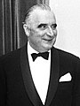

| Nom |
Mandat |
Note |
photos |
| Charles de Gaulle (22 novembre 1890 – 9 novembre 1970) |
8 janvier 1959 - 8 janvier 1966 |
Il est nommé président du Conseil par René Coty en mai 1958, pour résoudre la crise algérienne. Il fait
adopter par référendum une nouvelle Constitution qui fonde la Ve République dont il est élu premier
président par un collège électoral. En période de forte croissance économique, sa présidence est d'abord
marquée par la décolonisation de l'Afrique conclue par l'indépendance de l'Algérie en 1962. Il engage
une politique d'« indépendance nationale » et de « grandeur » illustrée par l'obtention de l'arme
atomique (1960), le traité d'amitié avec l'Allemagne (1963) ou encore les développements du nucléaire
civil et de l'avion supersonique Concorde. En 1962, après une tentative d'assassinat, il fait adopter
par référendum l'élection du président au suffrage universel. |
|
| Charles de Gaulle (22 novembre 1890 – 9 novembre 1970) |
8 janvier 1966 - 28 avril 1969 |
Réélu au suffrage universel face à François Mitterrand, il marque sa différence avec les États-Unis et
retire la France du commandement intégré de l'OTAN (1966). En 1967 il soutient le souverainisme
québécois à Montréal. Ayant refusé de se retirer pendant la crise de Mai 68, il finit par démissionner à
la suite de l'échec du référendum sur la réforme du Sénat et la régionalisation en avril 1969. Il reste
une référence de la vie politique française. |
|
| Georges Pompidou (5 juillet 1911 – 2 avril 1974) |
20 juin 1969 - 2 avril 1974 |
Premier ministre de Charles de Gaulle de 1962 à 1968, il est élu président face au centriste Alain
Poher. Ancien directeur de la banque Rothschild et europhile, il donne une nouvelle dynamique à la CEE
et fait adopter par référendum son élargissement en 1972. Il engage une politique de modernisation de
l'économie et d'industrialisation au niveau national, notamment favorable à l'automobile. Il meurt de la
maladie de Waldenström à son domicile le 2 avril 1974, deux ans avant la fin de son mandat. |
 |
| Valéry Giscard d'Estaing (né le 2 février 1926 - 2 décembre 2020) |
27 mai 1974 - 21 mai 1981 |
Élu face à François Mitterrand, il engage plusieurs réformes sociétales, dont l'abaissement de la
majorité civile de 21 à 18 ans, la dépénalisation de l'avortement ou la mise en place du divorce par
consentement mutuel. Il est confronté aux conséquences du premier choc pétrolier et aux divisions de sa
majorité, qui remporte pourtant les élections législatives de 1978. Il engage les troupes françaises en
Mauritanie, au Tchad, au Zaïre et en Centrafrique. Candidat à sa propre succession, il est battu par
François Mitterrand. Il est par la suite député, député européen, président du conseil régional
d'Auvergne, président de l'Union pour la démocratie française et président de la Convention sur l'avenir
de l'Europe. Membre de droit du Conseil constitutionnel, il n'occupe son siège qu'à partir de 2004. Il
est membre de l'Académie française depuis 2003. |
|
| François Mitterrand (né 26 octobre 1916 – 8 janvier 1996) |
21 mai 1981 - 21 mai 1988 |
Élu en 1981 après des échecs en 1965 et 1974, il est le premier président socialiste de la Cinquième
République. Il est à l'origine de l'abolition de la peine de mort. Confronté à l'échec de sa politique
économique inspirée du Programme commun, il opte pour le « tournant de la rigueur » en 1983 et relance
la construction européenne avec Jacques Delors. À la suite de la victoire de la droite aux élections
législatives de 1986, il nomme Jacques Chirac Premier ministre, inaugurant ainsi la première
cohabitation de la cinquième République. |
|
| François Mitterrand (né 26 octobre 1916 – 8 janvier 1996) |
21 mai 1988 - 17 mai 1995 |
Il est réélu le 8 mai 1988 face à Jacques Chirac. Le début du mandat est marqué par la chute du
communisme à l'Est et par la réunification allemande, à laquelle il est réticent. En 1991, il engage la
France dans la guerre du Golfe. L'année suivante, le traité de Maastricht est ratifié de justesse par
référendum. Il achève son second septennat sur une deuxième cohabitation avec Édouard Balladur, nommé à
la suite des élections législatives de 1993. Il demeure le président ayant exercé le plus long mandat,
toutes Républiques confondues. Il meurt quelques mois après la fin de son mandat, le 8 janvier 1996, des
suites d'un cancer de la prostate, dont il se savait atteint depuis 1981. |
|
| Jacques Chirac (né le 29 novembre 1932 - 26 septembre 2019) |
17 mai 1995 - 17 mai 2002 |
Jacques Chirac est élu président de la République en 1995 après deux échecs, en 1981 et 1988. Il ordonne
une dernière campagne d'essais nucléaires aux îles Tuamotu. Il tente de mettre en place des réformes
économiques importantes, mais échoue à les imposer. En 1996, il décide de professionnaliser les armées,
ce qui conduit à la suspension du service militaire l'année suivante. En 1997, il dissout l'Assemblée
nationale. La gauche remporte les élections législatives, ce qui le contraint à nommer Lionel Jospin
premier ministre pour une cohabitation de cinq ans. En 2000, le quinquennat présidentiel est approuvé
par référendum. |
 |
| Jacques Chirac (né le 29 novembre 1932 - 26 septembre 2019) |
17 mai 2002 - 16 mai 2007 |
Le 5 mai 2002, il est réélu face à Jean-Marie Le Pen. Sur le plan international, il engage la France
dans la guerre d’Afghanistan mais s'oppose à une nouvelle guerre en Irak. En mai 2005, il se maintient
malgré l'échec du référendum sur la Constitution européenne puis fait face à de violentes émeutes
urbaines en novembre, contre lesquelles il instaure deux mois d'état d'urgence. Il ne se présente pas à
nouveau à sa succession et, après sa présidence, il siège trois ans au Conseil constitutionnel, dont il
est membre de droit. |
|
| Nicolas Sarkozy (né le 28 janvier 1955) |
16 mai 2007 - 15 mai 2012 |
Élu en 2007 face à Ségolène Royal, il initie une politique internationale atlantiste (réintégration de
la France dans le commandement intégré de l'OTAN) et europhile (traité de Lisbonne, présidence du
Conseil de l'Union européenne) et crée l'Union pour la Méditerranée. La crise économique mondiale
commencée aux États-Unis s'étend au monde entier à l'automne 2008, provoquant une crise de la dette en
Europe, notamment grecque, ce qui marque le mandat. À la suite d'une révision constitutionnelle, il est
le premier président depuis Bonaparte à s'exprimer devant le Congrès de Versailles. Il fait notamment
voter une réforme des universités et des retraites. En 2011, il envoie les troupes françaises en Libye.
Il est le premier président de la Ve République à n'avoir qu'un seul Premier ministre au cours de son
mandat : François Fillon. Battu en 2012, il reprend sa carrière politique deux ans plus tard mais ne
parvient pas à remporter la primaire de son camp en vue de l'élection présidentielle de 2017. |
|
| François Hollande (né le 12 août 1954) |
15 mai 2012 - 14 mai 2017 |
Élu en 2012 face à Nicolas Sarkozy. L'année suivant sa prise de fonction, il promulgue la loi ouvrant le
mariage aux couples de même sexe. Sous son mandat, l'armée intervient au Mali, en Irak et en Syrie
contre la menace islamiste, ainsi qu'en Centrafrique. Sa présidence est marquée par les attentats de
janvier et novembre 2015 — qui le poussent à déclarer l'état d'urgence — ainsi que de juillet 2016 et
par l'accord signé lors de la conférence de Paris sur les changements climatiques. Il est partisan d'une
politique économique social-libérale mise en pratique par la loi Travail qui suscite une forte
contestation. Confronté à une très forte impopularité et à des divisions au sein du Parti socialiste, il
renonce à briguer un second mandat, une première sous la Cinquième République. |
|
| Emmanuel Macron (né le 21 décembre 1977) |
14 mai 2017 |
Élu en 2017 face à Marine Le Pen, il devient, à 39 ans, le plus jeune président de la République
française et le premier président né sous la Ve République. Il fait adopter une réforme du code du
travail, une loi de moralisation de la vie politique et une loi anti-terroriste. À partir de 2018, il
doit faire face à l'affaire Benalla et aux importantes manifestations des Gilets jaunes. Et à la crise
sanitaire du Covid-19
|
|